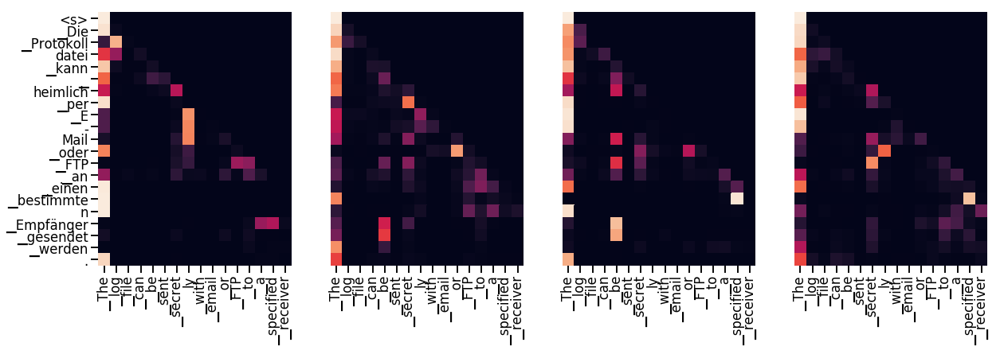

1 | import numpy as np |
背景
减少序列处理任务的计算量是一个重要的问题，也是Extended Neural GPU,ByteNet和ConvS2S等网络的动机。上面提到的这些网络都以cnn为基础，并行计算所有输入和输出位置隐藏表示。
在这些模型中，关联来自两个任意输入或输出位置的信号所需的操作数随位置间的距离增长而增长，比如convs2s呈线性增长，bytenet呈现以对数形式增长，这会使学习较远距离的两个位置之间的依赖关系变得更加困难。而在transformer中，操作次数则被减少到了常数级别。
self-attention有时候也被称为intra-attention,是在单个句子不同位置上做的attention，并得到序列的一个表示。它能够很好的应用到很多任务中，包括阅读理解、摘要、文本蕴含，以及独立于任务的句子表示。
端到端的网络一般都是基于循环注意力机制而不是序列对齐循环，并且已经有证据表明在简单语言问答和语言建模任务上表现很好。
据我们所知，Transformer是第一个完全依靠Self-attention而不使用序列对齐的RNN或卷积的方式来计算输入输出表示的转换模型。
模型结构
目前大部分比较热门的神经序列转换模型都有Encoder-Decoder结构。Encoder将输入序列 $(x_1,\dots,x_n)$映射到一个连续表示序列 $z=(z_1,\dots,z_n)$。
对于编码得到的z，Decoder每次解码生成一个符号，直到生成完整的输出序列:$(y_1,\dots,y_m)$ 。对于每一步解码，模型都是自回归的，即在生成下一个符号时将先前生成的符号作为附加输入。
1 | class EncoderDecoder(nn.Module): |
1 | class Generator(nn.Module): |
transformer的整体结构如下图所示，在encoder和decoder中都使用了self-attention，point-wise和全连接层。encoder和decoder的大致结构分别如下图的左半部分和右半部分所示：

encoder和decoder
encoder
encoder由N=6个相同的层组成。
1 | def clones(module, N): |
1 | class Encoder(nn.Module): |
在每个layer包含两个sublayer，分别为multi-head self-attention mechanism和fully connected feed-forward network，这两个sublayer都分别使用使用了残差连接(residual connection)和归一化。
1 | class LayerNorm(nn.Module): |
每个sublayer的输出为LayerNorm(x+Sublayer(x))，其中Sublayer(x)由子层自动实现的函数。在每个子层的输出上使用dropout，然后将进行归一化并作为下一sublayer的输入。
1 | class SublayerConnection(nn.Module): |
每个layer都由两个sublayer组成。第一个sublayer实现了“多头”的self-attention，第二个sublayer则是一个简单的position-wise的全连接前馈网络。
1 | class EncoderLayer(nn.Module): |
decoder
decoder 也是由n=6个相同层组成
1 | class Decoder(nn.Module): |
除了每个编码层中的两个子层外，解码器还插入了第三个子层，用于对编码器栈的输出实行”多头”的Attention。与编码器类似，每个子层两端使用残差连接，然后进行层的规范化处理。
1 | class DecoderLayer(nn.Module): |
我们还修改解码器中的self-attention子层以防止当前位置attend到后续位置。这种masked的attention是考虑到输出embedding会偏移一个位置，确保了生成位置i的预测时，仅依赖小于i的位置处的已知输出，相当于把后面不该看到的信息屏蔽掉。
1 | def subsequent_mask(size): |
下面的attention mask图显示了允许每个目标词(行)查看的位置(列)。在训练期间，当前解码位置的词不能attend到后续位置的词。
1 | plt.figure(figsize=(5,5)) |
<matplotlib.image.AxesImage at 0x7f86872b90f0>
attention
attention函数可以将query和一组key-value对映射到输出，其中query、key、value和输出都是向量。输出是值的加权和，其中分配给每个value的权重由query与相应key的兼容函数计算。
我们称这种特殊的attention机制为”Scaled dot-product attention”。输入包含维度为$d_k$的query和key，以及维度为$d_v$的value。
首先计算query与各个key的点积，然后将每个点积除以$\sqrt{d_k}$，最后使用softmax函数来获得value的权重。

在具体实现时，我们可以以矩阵的形式进行并行运算，这样能加速运算过程。具体来说，将所有的Query、key和value向量分别组合称矩阵Q,K和V，这样输出矩阵可以表示为：
1 | def attention(query, key, value, mask=None, dropout=None): |
两种最常用的Attention函数是加和Attention和点积(乘积)Attention，我们的算法与点积Attention很类似，但是$\frac{1}{\sqrt{d_k}}$的比例因子不同。加和attention使用具有单个隐藏层的前馈网络来计算兼容函数。虽然两种方法理论上的复杂度是相似的，但在实践中，点积attention的运算会更快一些，也更节省空间，因为它可以使用高效的矩阵乘法算法来实现。
虽然对于较小的$dk$，这两种机制的表现相似，但对于较大的$d_k$来说，不使用它进行缩放的情况下，加型Attention要优于点积Attention。我们怀疑，对于较大的$d_k$，点积大幅增大，将softmax函数推向具有极小梯度的区域(为了阐明点积变大的原因，假设q和k是独立的随机变量，平均值为0，方差1，这样他们的点积为$q.k = \sum{i=1}^{d_k}q_kk_i$,同样是均值为0，方差为$d_k$)。为了抵消这种影响，我们用$\frac{1}{\sqrt{d_k}}$来缩放点积。

多头机制能让模型考虑到不同位置的Attention，另外“多头”Attention可以在不同的子空间表示不一样的关联关系，使用单个head的attention一般达不到这种效果。
$Wi^Q \in \mathbb{R}^{d{model} \times d_k}$
$Wi^K \in \mathbb{R}^{d{model} \times d_k}$
$Wi^V \in \mathbb{R}^{d{model} \times d_v}$
$W^O \in \mathbb{R}^{hdv\times d{model}}$
我们的工作中使用h=8个head并行的attention，对每一个head来说有$dk=d_v=d{model}/h=64$，总计算量与完整维度的单个Head的Attention很相近。
1 | class MultiHeadedAttention(nn.Module): |
Attention在模型中的应用
transformer中以三种不同的方式使用了“多头”Attention：
在”Encoder-Decoder Attention”层，Query来自先前的编码器层，并且Key和Value来自Encoder的输出。Decoder中的每个位置Attend输入序列中的所有位置，这与Seq2Seq模型中的经典的Encoder-Decoder Attention机制一致。
Encoder中的Self-attention层。在self-attention层中，所有的key、value和query都来同一个地方，这里都来自encoder的前一层的输出。encoder中当前层的每个位置都能attend到前一层的所有位置。
类似的，解码器中的self-attention层允许解码器中的每个位置attend当前解码位置和它前面的所有位置。这里需要屏蔽解码器中向右的信息流以保持自回归属性。具体的实现方式是在缩放后的点积Attention中，屏蔽(设为负无穷)softmax的输入中所有对应着非法连接的Value。
position-wise前馈网络
除了Attention子层之外，Encoder和Decoder中的每个层都包含一个全连接前馈网络，分别地应用于每个位置。其中包括两个线性变换，然后使用ReLU作为激活函数。
虽然线性变换在不同位置上是相同的，但是他们在层与层之间使用不同的参数。这其实就是相当于使用了2个1x1的卷积核。这里设置输入和输出的维数为$d{model}=512$，内层的维度为$d{ff} = 2048$。
1 | class PositionwiseFeedForward(nn.Module): |
Embedding 和softmax
与其它序列转换模型类似，我们使用预训练的embedding将输入token序列和输出token序列转换为$d_{model}$维向量。还使用常用的预训练的线性变换和softmax函数将解码器输出转换为预测下一个token的概率。
在我们的模型中，我们在两个embedding层和pre-softmax线性变换之间共享相同的权重矩阵。在embedding层中，将这些权重乘以$\sqrt{d_{model}}$
1 | class Embeddings(nn.Module): |
位置编码
由于此模型不包含递归和卷积结构，为了使模型能够有效利用序列的顺序特征，需要加入序列中各个token间相对位置或token在序列中绝对位置的信息。在这里，我们将位置编码添加到编码器和解码器栈底部的输入embedding。
由于位置编码与embedding具有相同的维度$d_{model}$，因此两者可以直接相加。其实这里还有许多位置编码可供选择，其中包括可更新的和固定不变的。[17]
在此项工作中，我们使用不同频率的正弦和余弦函数：
其中pos是位置，i是维度。也就是说，位置编码的每个维度对应于一个正弦曲线，其波长形成从$2\pi$到$10000.2\pi$的等比级数。
我们之所以选择了这个函数，是因为我们假设它能让模型很容易学会attend相对位置，因为对于任何固定的偏移量k，$PE{pos+k}$可以表示为$PE{pos}$的线性函数。
此外，在编码器和解码器堆栈中，我们在Embedding与位置编码的加和上都使用了dropout机制。在基本模型上，使用$P_{drop}=0.1$的比率。
1 | class PositionalEncoding(nn.Module): |
1 | ##如下所示，位置编码将根据位置添加正弦曲线。曲线的频率和偏移对于每个维度是不同的 |
<matplotlib.legend.Legend at 0x7f86849e6208>
使用通过训练的方式获取位置embedding和直接使用以上公式生成位置embeding结果基本一样的。因此，这里选择正弦曲线版本的实现，因为使用此版本能让模型能够处理大于语料库中最长序列长度的序列。
完整模型
下面定义了连接完整模型并设置超参数的函数
1 | def make_model(src_vocab, tgt_vocab, N=6, |
1 | tmp_model = make_model(10,10,2) |
/usr/local/lib/python3.6/dist-packages/ipykernel_launcher.py:20: UserWarning: nn.init.xavier_uniform is now deprecated in favor of nn.init.xavier_uniform_.
训练
本节介绍模型的训练方法。
快速穿插介绍训练标准编码器解码器模型需要的一些工具。首先我们定义一个包含源和目标句子的批训练对象用于训练，同时构造掩码。
batches and masking
1 | class Batch: |
training loop
1 | def run_epoch(data_iter, model, loss_compute): |
Training Data and Batching
在wmt 2014 英语-德语 数据集上进行训练，该数据集包含450万个句对。句子已经使用byte-pair编码方式进行编码了，在source-target 词典中包含大约37000个tokens。
对于英语-法语，我们使用更大的语料库WMT 2014 英语-法语语料库，包含3600万条句对，然后按词进行分词，构建一个包含32000个单词的词典。
在训练中，每一个训练batch包含25000个源语言的token和25000个目标语言的token。
1 | global max_src_in_batch, max_tgt_in_batch |
硬件和训练时长
在一台有8个nvidia p100 gpus的机器上进行训练。对于我们的基础模型来说，使用论文中所说的超参数设置，每一个训练步花费0.4秒。基本模型是训练了100000 步，大概花费12个小时。而对于比较大的那个模型，每个训练步花费1.0秒，这个模型训练了300000步，一共3.5天。
优化
使用adam优化器$\beta1 = 0.9$,$\beta_2 = 0.98$和$\epsilon = 10^{-9}$。使用公式$lrate=d{model}^{-5}.\min(step_num^{-0.5},step_num.warmup_steps^{-1.5})$来设定学习率。即相应的线性的增加学习率对于第一个warmup_steps 训练步，然后把它按比例减小到步骤数的平方根的倒数。我们设定warmup_steps=4000。
1 | class NoamOpt: |
1 | def get_std_opt(model): |
1 | # Three settings of the lrate hyperparameters. |
<matplotlib.legend.Legend at 0x7f86830c59e8>
正则化
标签平滑
在训练的过程中，我们设置标签平滑值$\epsilon_{ls} = 0.1$。这会增加困惑度，从而使得模型变得更加不确定，但是会提高准确率和BLEU得分。
通过使用kl散度损失来实现label smoothing。通过创建一个包含正确单词置信度和其余的平滑质量值分布在字典中的其它单词中。
1 | class LabelSmoothing(nn.Module): |
接下来，我们通过一个例子来看看这些平滑质量是如何基于置信度分布到各个单词中的。
1 | # Example of label smoothing. |
/usr/local/lib/python3.6/dist-packages/torch/nn/_reduction.py:43: UserWarning: size_average and reduce args will be deprecated, please use reduction='sum' instead.
warnings.warn(warning.format(ret))
<matplotlib.image.AxesImage at 0x7f86830f6a90>
label smoothing是当模型对正确单词给予过大的置信度时进行惩罚，防止过拟合。
1 | crit = LabelSmoothing(5,0,0.1) |
/usr/local/lib/python3.6/dist-packages/torch/nn/_reduction.py:43: UserWarning: size_average and reduce args will be deprecated, please use reduction='sum' instead.
warnings.warn(warning.format(ret))
[<matplotlib.lines.Line2D at 0x7f8683047cc0>]
第一个例子
给定从小字典中随机出来的符号集合作为输入，输出是生成与输入一样的符号。
生成数据
1 | def data_gen(V, batch, nbatches): |
Loss Computation
1 | class SimpleLossCompute: |
Greedy Decoding
1 | # Train the simple copy task. |
/usr/local/lib/python3.6/dist-packages/torch/nn/_reduction.py:43: UserWarning: size_average and reduce args will be deprecated, please use reduction='sum' instead.
warnings.warn(warning.format(ret))
/usr/local/lib/python3.6/dist-packages/ipykernel_launcher.py:20: UserWarning: nn.init.xavier_uniform is now deprecated in favor of nn.init.xavier_uniform_.
Epoch Step: 1 Loss: 2.958416 Tokens per Sec: 540.000000
Epoch Step: 1 Loss: 1.895539 Tokens per Sec: 540.000000
tensor(1.8822)
Epoch Step: 1 Loss: 2.033992 Tokens per Sec: 540.000000
Epoch Step: 1 Loss: 1.702803 Tokens per Sec: 540.000000
tensor(1.7028)
Epoch Step: 1 Loss: 1.865366 Tokens per Sec: 540.000000
Epoch Step: 1 Loss: 1.458180 Tokens per Sec: 540.000000
tensor(1.4864)
Epoch Step: 1 Loss: 1.597016 Tokens per Sec: 540.000000
Epoch Step: 1 Loss: 1.191519 Tokens per Sec: 540.000000
tensor(1.3019)
Epoch Step: 1 Loss: 1.362523 Tokens per Sec: 540.000000
Epoch Step: 1 Loss: 1.144701 Tokens per Sec: 540.000000
tensor(1.1669)
Epoch Step: 1 Loss: 1.323817 Tokens per Sec: 540.000000
Epoch Step: 1 Loss: 0.642481 Tokens per Sec: 540.000000
tensor(0.6497)
Epoch Step: 1 Loss: 0.880322 Tokens per Sec: 540.000000
Epoch Step: 1 Loss: 0.335012 Tokens per Sec: 540.000000
tensor(0.3691)
Epoch Step: 1 Loss: 0.633148 Tokens per Sec: 540.000000
Epoch Step: 1 Loss: 0.275560 Tokens per Sec: 540.000000
tensor(0.3101)
Epoch Step: 1 Loss: 0.628232 Tokens per Sec: 540.000000
Epoch Step: 1 Loss: 0.242260 Tokens per Sec: 540.000000
tensor(0.2314)
Epoch Step: 1 Loss: 0.257507 Tokens per Sec: 540.000000
Epoch Step: 1 Loss: 0.186647 Tokens per Sec: 540.000000
tensor(0.1799)
使用greedy decoding来进行预测
1 | def greedy_decode(model, src, src_mask, max_len, start_symbol): |
1 | model.eval() |
tensor([[ 1, 2, 3, 4, 5, 6, 7, 8, 9, 10]])
一个真实数据集案例
使用IWSLT German-English 翻译任务的数据集进行训练和测试。同时基于此任务实现一个多gpu版本模型。
1 | !pip install torchtext spacy |
Data Loading
1 | from torchtext import data,datasets |
1 | if True: |
批处理对提升速度来说至关重要。我们想要非常均匀的划分batch，使得需要尽可能少的padding处理。要做到这一点，需要修改原数据集的batch方式，以确保每个batch里面的句子足够的紧凑，而尽可能少的padding处理。
iterators
1 | class MyIterator(data.Iterator): |
1 | def rebatch(pad_idx, batch): |
Multi-GPU Training
为了真正实现快速训练，我们将使用多gpu。这段代码实现了多gpu词语生成。这并不是特定于transformer的任务，因此这里不会涉及到太多的细节讲解。多gpu的大概工作原理就是，在训练阶段，把词语切分成多个chunk，然后分别使用不同的gpu并行处理这些chunk。这里使用pytorch parallel primitives来实现：
- replicate——把训练模块复制到各个不同的gpu上
- scatter——把batch数据逐个分发到各个gpu上
- parallel_apply——把各个gpu上的batch数据传递给对应gpu上的训练模块中进行训练
- gather——把各个gpu上的训练结果集中在其中一个gpu上
- nn.DataParallel—— a special module wrapper that calls these all before evaluating.
1 | # Skip if not interested in multigpu. |
到目前为止，模型、criterion、优化器，数据迭代器以及并行化都已经创建好了。
1 | #GPUs to use |
/usr/local/lib/python3.6/dist-packages/ipykernel_launcher.py:20: UserWarning: nn.init.xavier_uniform is now deprecated in favor of nn.init.xavier_uniform_.
/usr/local/lib/python3.6/dist-packages/torch/nn/_reduction.py:43: UserWarning: size_average and reduce args will be deprecated, please use reduction='sum' instead.
warnings.warn(warning.format(ret))
The `device` argument should be set by using `torch.device` or passing a string as an argument. This behavior will be deprecated soon and currently defaults to cpu.
The `device` argument should be set by using `torch.device` or passing a string as an argument. This behavior will be deprecated soon and currently defaults to cpu.
设置warmup_steps，其它的使用默认参数。硬件环境：AWS p3.8xlarge,4Tesla V100s。每秒处理大约27000个tokens，batch size为12000。
Training the System
1 | !wget https://s3.amazonaws.com/opennmt-models/iwslt.pt |
--2019-10-11 13:59:00-- https://s3.amazonaws.com/opennmt-models/iwslt.pt
Resolving s3.amazonaws.com (s3.amazonaws.com)... 52.216.162.157
Connecting to s3.amazonaws.com (s3.amazonaws.com)|52.216.162.157|:443... connected.
HTTP request sent, awaiting response... 200 OK
Length: 467317581 (446M) [application/x-www-form-urlencoded]
Saving to: ‘iwslt.pt.2’
iwslt.pt.2 100%[===================>] 445.67M 35.3MB/s in 14s
2019-10-11 13:59:14 (32.2 MB/s) - ‘iwslt.pt.2’ saved [467317581/467317581]
1 | if False: |
接下来使用训练好的模型进行一系列的翻译任务了。首先，对验证集的第一个句子进行翻译。由于验证集非常小，因此使用greedy search策略进行预测可以得到一个很不错的正确率。
1 | for i,batch in enumerate(valid_iter): |
Translation: And in 1914 , they 're looking at the rat technology that 's going to turn life on the screen .
Target: So 1860 , they are seeing this dirty technology that is going to choke the life out of New York .
额外组件：BPE,Search,Averaging
在这篇文章中，关于transformer，还有4个层面的技术没有详细的展开讲解。而这四个部分在OpenNMT-py中已经实现了。
BPE/Word-piece: 使用一个第三方库来处理数据集，把它分成子词单元(实现细节请参考:subword-nmt)。最终数据集会被处理成如下形式：
▁Die ▁Protokoll datei ▁kann ▁ heimlich ▁per ▁E - Mail ▁oder ▁FTP ▁an ▁einen ▁bestimmte n ▁Empfänger ▁gesendet ▁werdenShared Embeddings:当使用带有共享字典的BPE，可以在source/target/generator之间共享权重参数。更多细节请参考:cite。把这个技术集成到模型中，只需要以下语句即可实现：
1 | if False: |
Beam Search: 更多细节请参考:OpenNMT-py
Model Averaging: 论文中把最近的k次checkpoints进行平均，从而构建一个集成模型。
1 | def average(model, models): |
Result
1 | !wget https://s3.amazonaws.com/opennmt-models/en-de-model.pt |
--2019-10-11 14:06:11-- https://s3.amazonaws.com/opennmt-models/en-de-model.pt
Resolving s3.amazonaws.com (s3.amazonaws.com)... 52.216.105.173
Connecting to s3.amazonaws.com (s3.amazonaws.com)|52.216.105.173|:443... connected.
HTTP request sent, awaiting response... 200 OK
Length: 393031182 (375M) [application/x-www-form-urlencoded]
Saving to: ‘en-de-model.pt’
en-de-model.pt 100%[===================>] 374.82M 76.5MB/s in 4.8s
2019-10-11 14:06:16 (78.3 MB/s) - ‘en-de-model.pt’ saved [393031182/393031182]
1 | model, SRC, TGT = torch.load("en-de-model.pt") |
/usr/local/lib/python3.6/dist-packages/torch/serialization.py:453: SourceChangeWarning: source code of class 'torch.nn.modules.container.ModuleList' has changed. you can retrieve the original source code by accessing the object's source attribute or set `torch.nn.Module.dump_patches = True` and use the patch tool to revert the changes.
warnings.warn(msg, SourceChangeWarning)
/usr/local/lib/python3.6/dist-packages/torch/serialization.py:453: SourceChangeWarning: source code of class 'torch.nn.modules.linear.Linear' has changed. you can retrieve the original source code by accessing the object's source attribute or set `torch.nn.Module.dump_patches = True` and use the patch tool to revert the changes.
warnings.warn(msg, SourceChangeWarning)
/usr/local/lib/python3.6/dist-packages/torch/serialization.py:453: SourceChangeWarning: source code of class 'torch.nn.modules.dropout.Dropout' has changed. you can retrieve the original source code by accessing the object's source attribute or set `torch.nn.Module.dump_patches = True` and use the patch tool to revert the changes.
warnings.warn(msg, SourceChangeWarning)
/usr/local/lib/python3.6/dist-packages/torch/serialization.py:453: SourceChangeWarning: source code of class 'torch.nn.modules.container.Sequential' has changed. you can retrieve the original source code by accessing the object's source attribute or set `torch.nn.Module.dump_patches = True` and use the patch tool to revert the changes.
warnings.warn(msg, SourceChangeWarning)
/usr/local/lib/python3.6/dist-packages/torch/serialization.py:453: SourceChangeWarning: source code of class 'torch.nn.modules.sparse.Embedding' has changed. you can retrieve the original source code by accessing the object's source attribute or set `torch.nn.Module.dump_patches = True` and use the patch tool to revert the changes.
warnings.warn(msg, SourceChangeWarning)
1 | model.eval() |
Translation: <s> ▁Die ▁Protokoll datei ▁kann ▁ heimlich ▁per ▁E - Mail ▁oder ▁FTP ▁an ▁einen ▁bestimmte n ▁Empfänger ▁gesendet ▁werden .
注意力可视化
1 | tgt_sent = trans.split() |
Encoder Layer 2
Encoder Layer 4
Encoder Layer 6
Decoder Self Layer 2
Decoder Src Layer 2
Decoder Self Layer 4
Decoder Src Layer 4

Decoder Self Layer 6

Decoder Src Layer 6